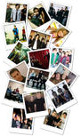
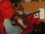

Tom

":-)"
Male
30 years old
Santa Monica,
CALIFORNIA
United States
Last Login:
4/22/2006
Contacting Tom


MySpace URL:
http://www.myspace.com/tom
Tom's Interests
General
Internet, Movies, Reading, Dancing, Karaoke, Baseball, Language, Culture, History of Communism, Philosophy, Singing/Writing Music, Running, Finding New Food, Weight Lifting, Hiking, WWI Aviation, Travel, Building alternate communities
Music
Bands: Beatles, Superdrag, Jackson 5, Weezer, Sex Pistols, The Carpenters, Vain, Radiohead, Teenage Fanclub, Rocket from the Crypt, Pitchfork, Oasis, Rialto, Supergrass, Travis, The Doors, Cheap Trick, Simple Plan, Alice Cooper,
KISS, A*TEENS, The Beach Boys, The Velvet Underground, Journey
Solo Artists: Billy Joel, Bruce Springsteen, Elvis, Brendan Benson, David Bowie, Rick Springfield, Barry Manilow, Paul Stanley Solo Album, Bob Dylan, Rod Stewart
Singers: Michael Jackson (age 14 & under), Karen Carpenter, Whitney Houston (particularly The Bodyguard soundtrack), George Michael, Louie Louie, Coco Lee, Robin Zander, Frank Sinatra, Steve Perry, Gerard Way
Albums: Appetite for Destruction - Guns & Roses; Life - The Cardigans; A Hard Day's Night - The Beatles; Dookie - Green Day; Blue - Weezer; One Missisipi - Brendan Benson; Two Steps from the Move - Hanoi Rocks; Led Zeppelin
I, The Doors, In The Valley of Dying Stars - SuperDrag; Survivor When Seconds Count - Rick Springfield, Working Class Dog
Instruments: The Er Hu, Piano, certain guitar tones (Rocket from the Crypt, Sex Pistols, Rolling Stones)
MySpace Artists: Limbeck, Butch Walker, The Fictions, The Ettes, Feable Weiner, Billionaire Boys Club, Halfway Home, The Pacific, The Honorary Title, Stranded Alone, Kill Hannah, FallOutBoy, Melee, The Shore, The Summer Obsession,
Kino, Cary Brothers, The Volunteers, The Howl, Head Automatica, Seel Fresh, Jupiter Sunrise, Keane, Say Anything. Tsar, Much The Same, Plain White T's!
Movies
Films: Lawrence of Arabia, Ben Hur, Patton, Spartacus, Gandhi, The 10 Commandments, Apocalypse Now, Beauty & The Beast (the cartoon), Thin Red Line, Titanic, Gladiator, The Patriot, Breakfast at Tiffanys, Un Coeur en Hiver, To
Live, Happy Times, The Road Home, Not One Less, Ju Dou, Red Sorghum, The Empire of the Sun, Gone With the Wind, The Godfather, 2001, Clockwork Orange, Blade Runner, Deer Hunter, Mean Streets, Grease, Urban Cowboy, Saturday Night Fever, The Sound
of Music, Copland, Xiu Xiu, Dances With Wolves
Directors: Kubrick, Francis Copolla, Zhang Yimou, Anh Hung Tran, Steven Spielberg
Television
Tuned out. Except for SF Giants. I rented Band of Brothers and liked that.
Books
Nietzsche, George Orwell, Milan Kundera, Laurens van der Post
Tom's School
University of California- Los Angeles
Los Angeles, CALIFORNIA
Graduated: 2000
Degree: Master's Degree
Major: Film - Critical Studies
1999 to
2000
University of California- Berkley
Berkley, CALIFORNIA
Graduated: 1997
Student status: Alumni
Degree: Bachelor's Degree
Major: English & Rhetoric
1993 to
1996
Tom is in your extended network
Tom's Latest Blog Entry[Subscribe to this Blog]
MySpace Concert & Parties -Georgia, Orlando, Miami! (view more)
In Stores Today - MySpace Records Vol. 1 ! (view more)
MySpace Records - get more photos for your profile! (view more)
October 29th - MySpace 2-Year Anniversary Concert! (view more)
NIN, QOTSA, Acoustic and Punk Tours (!) (view more)
[View All Blog Entries]
Tom's Blurbs
About me:I'm here to help you with MySpace. Send me a message if you're confused by anything. Before asking me a question, please check the FAQ to see if your question has already been answered.
I may have been on your friend list when you signed up. If you don't want me to be, click "Edit Friends" and remove me!
Also, feel free to tell me what features you want to see on MySpace and if I think it's cool, we'll do it!
If you want a tutorial on HTML/designing your page, check this out: Mack!!
Note: If you try to view my friends list you won't see all 24,000,000 million people. This was bogging down the system, so we made it only show 40 people. So you wont be able to see the friends on my list.
Who I'd like to meet:
I'd like to meet people who educate, inspire or entertain me... I have a few close friends I've known all my life. I'd like to make more.
Tom's Friend Space
Tom has 73090713 Friends
MySpace Records
Andi

abraham
tanner

Tams

MySpace Records
J-e-n-n-i

MySpace Records

Gram
4/22/2006 6:54 PM
Dude, Appetite for Destruction Rocks, same with Alice Cooper and KISS
Amanda Lepore

4/22/2006 6:51 PM
tom=new money. ;D congrats darling
Tom's Friends Comments
Displaying 50 of 73090713 comments (View/Edit All Comments)